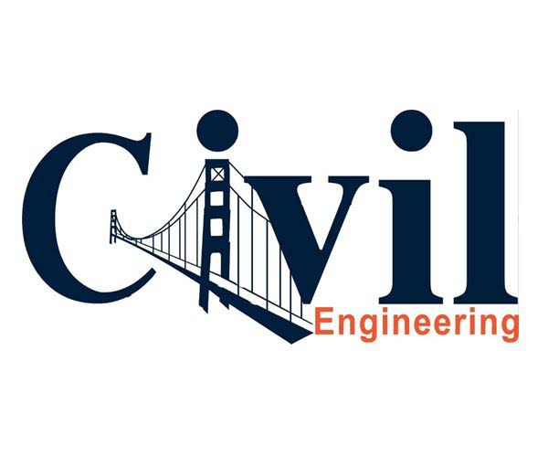

MITS CIVIL ENGINEERING SOCIETY
Madanapalle Institute of Technology & Science is established in 1998 in the picturesque and pleasant environs of Madanapalle and is ideally located on a sprawling 26.17 acre campus on Madanapalle - Anantapur Highway (NH-205) near Angallu, about 10km away from Madanapalle. MITS originated under the auspices of Ratakonda Ranga Reddy Educational Academy under the proactive leadership of Late Sri. N. Krishna Kumar M.S. (U.S.A), the then President and Dr. N. Vijaya Bhaskar Choudary, Ph.D., Secretary & Correspondent of the Academy. MITS is governed by a progressive management that never rests on laurels and has been striving conscientiously to develop it as one of the best centers of Academic Excellence in India. The Institution's profile is firmly based on strategies and action plans that match changing demands of the nation and the students fraternity. MITS enjoys constant support and patronage of NRI's with distinguished academic traditions and vast experience in Engineering & Technology.
The Department of Civil Engineering is started in the year 2014.The Department offers 4 years B.Tech programme. The course offers a deep insight into the discipline and enables promising engineers to acquire skills required to succeed both individually as well as in Industry. The Department is offering M.Tech - (Structural Engineering) from the academic year 2017 - 2018. Keeping in view of the technological advancement, the department is fortified by the most qualified and experienced faculty. The department is well equipped with modern laboratories.